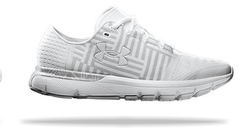

By: Ryan Harker
Wearable technology includes any form of computing that is designed to be worn by the user, whether it's embedded into the clothing or worn as an accessory. Many wearables, such as smart pedometers, overlap somewhat with health and safety as the device is both wearable and intended to help improve your personal health.
Today’s infographic not only highlights the history of wearable technology, but it also shows the noticeable acceleration in the advancement and adoption of new innovations. At the beginning, it would be hundreds of years between breakthroughs such as eyeglasses and the abacus ring. Today, new wearable tech innovations happen every month. In the last ten years, we’ve had the Google Glass, Fitbit, Oculus Rift, and countless others.
Apple is embracing the smartwatch’s function as a high-tech heart rate monitor. These special features for the new OS4 include those specifically geared towards swimmers, smart activity coaching, and a redesigned WorkOut app. The AppleWatch OS4’s updates to the Heart Rate Sensor seem specifically-designed to help those who may have health issues.
The Apple Watch
Studio XO's tech-infused luxury streetwear for Gen Z landed in early 2017, starting with a light-up smart cap and backpack with t-shirts and jackets to come. The fashion tech line is for teens who want to "wear the internet" and is inspired by XO's work on live music experience wristbands.
Studio XO's Wearable Technology
After launching the UA Healthbox of connected fitness gear in 2016, Under Armour unveiled its next generation of smart running shoes. While it's not going to follow Fitbit or Apple's mindful approach, it looks like we can expect to see entirely new devices from different product categories as well and a continued push on sleep and food tracking.
Smart Shoes
